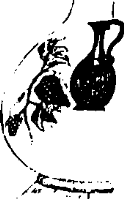

Bahçenin demir kapısını açıp, Villa Argun’un morsalkım ve erguvan ağaçlarıyla dolu, korunmuş cennetine girdi. İki katlı, büyük, ferah evlerinin ön kapısı ardına kadar açıktı ve yine ardına kadar açık olan arka kapısından arka bahçenin bir kısmı görünüyor, dahası o taraftan şen kahkahalar geliyordu. Çantasını koltuklardan biri üzerine fırlatarak arka tarafa geçti, işte o an, an dondu. Kısa bir sessizlik oldu ve sonra koro “iyki doğdun Arguun...” şamataları ile bahçeyi çınlattı: “...gunn.”
“Ah Perran, bu kız adam olmaz. Bugün doğum günüm müymüş?” diye düşündü. Biraz önce aklından geçen ve ister istemez taksici ile paylaştığı “ölüm günü” veya “kıyamet” senaryosundan uzaklaştı. Argun Bey her iki algılamasının da gerçek yanları bulunduğunu, farklı kişiler için olsa da, o günün hem ölüm günü hem de doğum günü olduğunu o an için bilemezdi tabii. Doyasıya eğlendi.
Doğum günüydü. Çünkü Argun Afaki o gün yepyeni bir misyonla yeniden doğdu. Gözlerinden bir perde kalkmadı, bilakis gözlerine bir perde çekildi. Saydam, her şeyi, eMaRını çekercesine derinden, elektron mikroskobu gibi kimsenin görmediği kadar yakından, teleskop gibi uzaktan gösteren bir perdeydi bu. O günden sonra Argun Afakinin kısık gözleri devasa bir darbeli matkap oldu.
Bu multivizyonel gözler, asırların aymazlığı ile küflenip kaşarlanmış, katar katar sır bulutları ile kat kat katmerlenmiş gizlilik ufuklarını şimşek hızında seri darbeler indirerek peynir gibi deldi bıraktı. Şimdiye değin habis ırkçı cüceler tarafından saklanmış hazineler, tüm insanlığın yararına bir sebil oldu, açılan deliklerden sıvı altın gibi oluk oluk aktı.
Vakit sabırsız bir süvari gibi laciverdi karanlıklara doğru ilerliyor, Villa Argun canlı müziğin hızlı ritmi ile sarsılıyor, arka bahçenin güzelim İngiliz çimleri bir Moğol keşif kolunun hışmına uğramış gibi darmadağın ve perişan, “etler dağ gibi yığılmış, kımız göl gibi sağılmış,” içki akışı Seyhun’un debisine ulaşmış, zıp zıp zıplayan insanların çığlıkları, kahkahaları Aşiyan semalarına yükseliyor. Argun Afaki, büyük kızı Tavramina’nın karşısında dans ediyor, sınırsız enerjisi ile değme gençleri cebinden çıkarıyordu.
İki başarısız denemeden sonra sevgili eniştesi Pertev’in eli Argun’un sol omzunu tutturabildi:
“Oğlum bırak biraz da gençler eğlensin!”
Argun, kan ter içinde durdu. Kenara çekildi. Abisinden bir saat kadar sonra partiye katılan Tankut hemen ortaya fırladı. Kızıl saçlarına pek giden narçiçeği renginde kısa bir elbise giymiş, nar tanesi, nur tanesi ve dahi yeni boy atmış nar fidanı endamlı Tavramina’nın gök yeşil gözleri çakmak çakmak oldu, yakamozlara boğuldu. Sekreter Çiçek’in yüzü askıya asılan eski bir giysi gibi asıldı.
Pertev Dilmen kayınçosunun terden sırılsıklam olmuş siyah tüylü koluna girdi:
“Yav oğlum dur... dur... Soluklan biraz, kendini öldürme... Bak seni kimle tanıştıracağım.”
Argun Afaki’nin, “Yakup Sinan Bey” adıyla tanıştırılan adamı, adam gibi görebilmesi için biraz toparlanmaya ihtiyacı vardı. Yok, gerçekten de tanıdığı biri değildi. Partinin başlangıcında da gördüğünü hatırlayamadı. Yakup Sinan Bey, simsiyah takım elbiseli, zayıf, uzunca boylu, kısa ak saçlı, sinekkaydı tıraş olmuş, biraz kalınca dudaklı, üstelik gece olmasına karşın gözünde kapkara gözlükleri olan bir kişiydi. Dans etmiş veya zıplamışa da pek benzemiyordu. Eniştesini ve adamı üst kattaki çalışma odasına buyur etli. Beraberce çıktılar. Argun, eniştesi ile birlikte ikili turuncu deri koltuğa otururken adama karşılarındaki tek, Emanuelle koltuğu gösterdi. Adam yaratacağı tuhaf görüntüye aldırmaksızın hasır koltuğa geçti, gözlüklerini çıkardı, önündeki Afgan işi sehpaya koydu. Duru, sakin, mavi çocuk gözleriyle karşısındakilere baktı. Pertev, kendi evindeymişçesine, rahatlıkla herkese viski doldururken açıklamalarına devam ediyordu:
“Argun’cum, Yakup ile kolejden arkadaşız. Bizim 56’lılardan. Normalde İtalya’da, Livomo’da yaşıyor. Yaz için geldi.”
Adam, saatlerdir ağzını hiç açmadığını, hiç konuşmadığını ele veren hafif bir öksürük sesi çıkardı.
“Argun Bey, böyle bir günde rahatsızlık vermek istemezdim ama yarın 05:45 uçağı ile geri dönüyorum, af buyurun. Sizinle çok önemli bir konuda konuşmak istedim... yoo... Pertev hemen davranma canım, bizim ayrımız gayrımız mı var... Evet, konu önemli. Siz zaten fıtraten mevcut zekânız ve çok daha önemlisi, bilimin bile önüne geçen harikulade sezginiz ile başkalarının yıllarca uğraşsa gelemeyeceği bir noktaya geldiniz. Bu yüzden de sizinle konuşmamız gerek...”
Argun Afaki’nin soran bakışları üzerine, sesini biraz daha bulmuş olarak devam etti:
“Efendim mensubu bulunduğum ve kendi şuurlu seçimimiz neticesinde yakında asimilasyona uğramak üzere olan camia sizinle temasa geçmem konusunda beni vekil kıldı. Türkiye’de pek gecikmiş onomastique çalışmalarını başlatan birine bizim de bazı söyleyeceklerimiz var...”
Pertev Dilmen galiba, “Tüh Allah müstehakınızı versin, ne alakası var? Uno-mastik o bir kere, bir numara sakız yav, ben uydurdum, buncağızlar sakızcı... ben dilciyim...” yollu bir şeyler söylemeye hazırlanıyordu ki kayınbiraderinden sert bir dirsek yiyerek sustu.
Argun Afaki, sözcüğü ilk kez duyuyordu. Yine de bir iş görüşmesi zeminine hızla kaymakta olduklarını anlayacak kadar feraset sahibiydi. Adamı teşvik etti:
“Buyurun efendim, sizi dinliyorum.”
Yakup Sinan Bey, Fransızca –anlaşılmadığını düşündüğü durumlarda İngilizce– terimlerle süsleyip karıştırdığı aksanlı ve hafif eskimiş Türkçesi ile anlattı, anlattı.
Yarım saat sonra Argun Afaki hadisenin basit bir iş görüşmesini, evet tabii o tarafı da vardı ama, fersah fersah aştığını gördü. Bir yarım saat sonra ise, her şey gibi basit bir şifreye sığacak kadar karmaşık bir örüntünün en ince ayrıntılarına vâkıf oldu. Evet, Argun Afaki o gece “olanlar nasıl oldu”, “niye oldu”, “nasıl oluyor da oluyor” ve “adamlar nasıl yapmış” gibi tüm soruların cevabını buldu. Onun kadar zeki olmayan ve dolayısıyla duyduklarının ancak bir kısmını kavrayabilen zavallı dilci eniştesi Pertev’in bile bir şeyler anladığı kesindi. Ağzı açık kalmıştı adamcağızın, dinliyordu.
Yakup Sinan, toparlamak üzereydi. Kibar, karşısındakini kırmaktan çekinir bir üslupla konuşmaya devam etti:
“Efendim, siz zaten nurlu zekânız sayesinde yolun büyük kısmını yürüdünüz. Bizim bu davadaki kılavuzluğumuz sınırlıdır. Şu aktardıklarım sizi yolun sonuna doğru çoğalan çıkmaz sokaklara dalıp boşuna vakit yitirmekten kurtarırsa kendimizi bahtiyar sayarız. Mesela, onomastique çalışmalarının ilk safhalarında cins isimler dahil her türlü isme ilgi duyulması doğaldır. Lütfen yanlış anlamayın, sizi yönlendirmek haddimize değil, ama biz naçizane, özel isimlere eğilmenizi daha çok arzularız. Ne hazinedir özel isimler, değil mi efendim? Tam anlamıyla bir thanatologie çalışmasına gitmese bile necrologie'yi bir yöntem olarak kullanmanız, nasıl diyorlar... obituary’leri dikkate almanız bizi nasıl mutlu eder, tahmin bile edemezsiniz. Belki Rab muininiz olur. Şöyle dört başı mamur bir grup biyografisi, prosopographic bir çalışma çıkar ortaya. Başarınız hepimizin başarısıdır. Işıklı, feyizli yolunuzda emin ve müsterih terakki ediniz.”
Kapıda beliren ve gelişini fark etmedikleri Perran’ın sesi ile irkildiler. Davetliler birer ikişer gitmeye hazırlanıyordu. Argun müsaade istedi. Yakup Sinan da ayağa kalktı. Perran’ın tüm itirazlarına rağmen o da ev sahipleri ile vedalaştı.
Bir buçuk saat kadar sonra tüm ev halkı yatmış, Argun Afaki Bey ise çalışma odasında, binlerce terabayt'lık beyninin henüz erişkin olmayan hücrelerini bile erkenden olgunlaştırıp göreve çağırmış, kendisi bizzat bir fikir kasırgası, etrafına haleler yayan bir çağrışım anaforu haline gelmiş, çalışıyordu.
Evinde acil durumlar için her zaman Bristol kartlarından bulundururdu. Siyah mürekkepli kalemiyle sadece bir yüzlerini kullandığı kocaman kartlardan bir tanesini doldurmak ancak iki dakikasını alıyor, biten kartı artık nereye konarsa fırlatıyor, yenisine saldırıyordu. Argun Sakız ve sonra Uno-mastik’te geçen zamana hem kızıyor hem de o dönemlerde edindiği çalışma disiplini ve olgu hazinesine çok şeyler borçlu olduğunu düşünüyordu. Evet, belki yanlış yapmış, herhangi bir teoriye olunmaksızın yalnız olgu toplamakla yetinmişti. İşi de bunu gerektiriyordu. Şimdi ise, Yakup Sinan’ın söyledikleri ışığında, hazır bir teorisi vardı, bildiği olguları buraya oturtuyordu.
Teori basit, anlaşılır, temiz ve sadeydi: Sabetay Zevi’nin takipçileri hâlâ vardı; eğitimli, zengin ve çok güçlüydüler. Bunlar görünürde Müslüman olmalarına karşın, gizli inançlarının bir arada tuttuğu bir klik olarak faaliyet gösteriyor ve toplumun kilit noktalarında birbirlerini kayırıp kollayarak yüzyıllardır güzel ülkemizi ve belki başka yerleri de yönetiyorlardı. Nokta.
1648 yılında İzmir’de Sabetay Zevi adlı genç bir mistik, bir ihtimalle babası Mordehay’ın temsilciliğini yaptığı İngiliz tüccarlar sayesinde, Hıristiyan milener düşünceyle tanışarak, güvendiği insanlara Mesih olduğunu ifşa etmeye başlamış, yerel hahamların baskısıyla İzmir’den sürülünce Selanik, İstanbul, Filistin ve Kahire’yi dolaşmıştı. Ömrünü yaratıcı ile bir olmaya, yani Adam Kadmon olmaya adayan genç adam, kendisine vaat edilen Sarah adlı bir kızla evlenip Kudüs’e dönünce Gazzeli Nathan Benjamin Levi tarafından Maşiah/Mesih ilan edilmişti.
Zevi, buna ve Nathan’ın 1666 yılını kıyamet yılı olarak ilan etmesine ses çıkarmamış, oranın hahamlarının tepkisini çekince 1665 sonbaharında İzmir’e dönmüştü. Halkın geniş desteğinden cesaret alarak, bu sefer Mesihliğini açıkça ilan etmiş, imparatorlukta yaşayan Yahudi zimmilerden ve müsteminlerden bir kısmını, hatta bazı Hıristiyan ve Müslümanları etkilemişti. Önceleri Isac Slyvera ve Abraham Yachini, sonra Rabbi Hayim Benveniste tarafından desteklenmiş, ünü imparatorluk dışına taşmış, Venedik, Hamburg, Amsterdam, Londra ve bazı kuzey Afrika liman kentlerindeki Yahudiler arasında da destek bulmaya başlamıştı.
Büyük bir ihtimalle kendi toplum düzenlerinin bozulacağından korkan Yahudi cemaati önderleri tarafından padişaha şikâyet edilmiş, 1666 yılının başlarında İstanbul’a çağrılarak tutuklanmış, Çanakkale’de kısa bir sürgün hayatından sonra Eylül 1666’da Edime sarayında Sultan IV. Mehmet’in huzuruna çıkarılmıştı. Neredeyse bütün bir yıl “acaba mı” diyerek, kıyametin kopmasına yarım da olsa bir ihtimal veren ve eğer kıyamet koparsa el altında bir Mesih bulundurmanın yararına inanmış olan Avcı Sultan, artık daha fazla beklemeye gerek olmadığını ve Sabetay’ın Şeyhülislam Yahya ve ulemadan Vani Efendiler tarafından sorgulanmasını emretmiş. Zevi de Osmanlı siyasi otoritesini karşısına almak istemeyerek Müslüman olmuş, takipçileri de, adları üstünde kendisini izlemişlerdi.
Evet, bu işte Argun Bey’in kafasını hafiften kurcalayan bazı tuhaflıklar ve tutarsızlıklar da yok değildi. Mesela, nasıl olmuş da Sabetay’ın, eskiden avdeti de denen dönme müritleri kendi içlerinde bile anlaşamayıp parça parça bölünürken başkalarını derleyip, toparlayıp yönetmişler ve hâlâ da yönetebiliyorlardı?
Zor soruydu ama ne yapacaktı yani? Olgular teori ile çeliştiklerinde, geç bulduğu koca teoriyi çabucak kaybedecek değildi ya? Ülkemizi yönettikleri sezgisel düzeyde kesin olan bu adamların bu bölünmüşlükleri bile belki hesaplı olabilirdi. Bizatihi bu bölünme bile bir amaca hizmet etmesin sakın? Kaldı ki yeni araştırmalar her an yeni olgular üretebilir veya ortaya çıkarabilir, görünüşteki bu tip çelişkileri ortadan kaldırabilirdi. Acaba onomastique çalışmalar bu esrar perdesini aralayabilir miydi?
Evet, evet. Özel isimler, özel isimler çok önemliydi. Yakup Sinan’ın kalın dudaklarının görüntüsü gözünün önünden, aksanlı Türkçesiyle söylediği özel isimler kulaklarından gitmiyordu: Sabetay, Zvi, Sevi, Nathan, Scholem, Abdülgafur, Abdullah Yakup, Mustafa Çelebi, Osman Baba, Hamdı Bey, İzmir, İstanbul, Musul, Selanik, Gazze, Kırım, Ülgün, Joseph, Jacob, Hageveret, Nasi, Nakşa, Ha Yam ha–Tihon, Hidekel, Yeruşalayim, Ezazil, Zibidee, Kıbrıs, Ester, Moşe, Gehenna, Thutmoses, Amon, Meymunides, Uç bin Ongh, Kanaan, Knesset, Gush Emunim, Histadrut...
Bunları yine bir kısmını Yakup Sinan’dan duyduğu, bir kısmını Uno-mastik sayesinde zaten bildiği Maşiah, Mesih, şem hakodeş, kinnui, erez, ogan, targum, tov, Karakaşîler, Yakubîler, Kapanîler, Karaylar, rav, adoni, sofer, ma’afera, migdal, oz, müminim, koşer, aliyah, kohen, koferim, bananot gibi büyülü kelimelerin zihninde yarattığı arka plana yerleştiriyor, yaptığı keşifler daha gün ışığını görmezden önce onu heyecanlandırıp bağırtıyordu.
Bu keşiflerin, ki dürüst yapısından dolayı bunların bir kısmının icat olması ihtimalini hiç göz ardı etmiyordu, malzemesi burnumuzun dibinde, gazetelerde, kitaplarda, dilin kendinde, atasözlerinde, deyimlerde, şarkılarda, türkülerde velhasıl her yerdeydi. Çok uzağa gitmeden hemen o günün gazetelerine bakıyor, ne mesela? Ne bu?
“Evladımız, babamız ve kocam
Sami Karamehmet’i kaybettik
Üzüntümüz sonsuzdur. Aziz naaşı
yarın ikindiyi müteakip
Teşvikiye Camii’nden kaldırılacaktır.”
Ne demek Sami? Ha ne demek? Doğrudan kavimlerinin adını ad olarak almış. Çekinmezliğe, gözü karalığa bak. Ya Karamehmet? Etmeyin yahu, bebeler bile yemez bunu! Kara değil, Karay... Evet efendim, hani o Karaim de denen Hazar kalıntısı Musevi Türkler, doğrusu Karaymehmet. Peki ya Mehmet? Yani Sabetay’ın ihtida ettiği zaman aldığı isimden başka ad mı kalmadı koca Türkçede? Peki ya cami? Güzelim, sıkıntı zaten burada ya! Şu yukarıda saydığım özelliklere sahip biri, eğer Sabetaycı değilse niye camiyle işi olsun ki? Bir defa şu “ikindiden sonra” ne demek? Bunun namazı yok mu?
Sonra müteveffanın ailesi olarak sıralanan bir sürü kişinin ismini tek tek dikkatle inceliyor Argun Bey. Babası: Enver, Annesi: Nuriye, Karısı: İşık, Oğlu: Aydın Karamehmet; ışığa takmışlar sülalecek. Vee sıkı durun, Kızı: Sema Altınelma. Evet inanılmaz bir grup resmi çıkıyor ortaya. Böyle kristal berraklığında bir dizge her çiçeği burnunda onomastique araştırmacısına nasip olmaz.
Altınelma, altınelma? Türkçede hiç böyle bir bileşik isim var mı altınelma diye? Yok, ne var? Kızılelma. Ama ismi lazım değil, bir Ortadoğu devletinde var: Tapuahzahav. Kısatılmışı tapuz. Eşittir altınelma. Yine sıkı durun. Bu o kavmin dilinde elma değil, portakal demek efendim, portakal demek! Neden mi? Ahd-i Atik zamanlarında Ortadoğu’da portakal yoktu. Ahali de tanımıyordu. Çok sonraları Siyonizmin gücü bu insanları Doğu Avrupa’daki yurtlarından söküp Filistin’e getirince orada portakalı gördüler. Buna bir isim vermek gerekti. Altınelma dediler.
Bir de bu “mezar taşının” sonundaki “kaldırmak” kelimesi var. Sabetayistlerimiz acaba lbranicede “yükselmek” anlamına gelen fakat metaforik olarak Kutsal Topraklar’a yapılan göçü anlatan “aliyah” kelimesini çağrıştırmak için kullanmış olabilirler mi bunu? Açıkta değil, gizlidir bilim. Bakmak, incelemek gerek. Uuu... bir de “devlet-i âliye” diye bir şey var... Aman Allah’ım! Kullanmasını bilene cömerttir de bilim. Demek ki en bizden zannettiğimiz kelimelerde bile dikkatli olmak zorundayız, uuu...
O gece Argun Bey sabahın ilk ışıklarına kadar uykuya direndi. Yukarıdaki gibi on dokuz ayrı ilanı daha onomastique ilminin ışığı altında inceledi. Bunların on yedisinin Sabetayist olduğunu kuşkuya yer vermeyecek bir şekilde kanıtladı. Kalan ikisinden biri, zaten açıktan Musevi bir vatandaşa, diğeri de kentimizde yoga dersleri verirken ölen Hintli bir kadına aitti. İlan, Parapsikoloji ve Meditasyon Arama Grubu tarafından verilmişti. Sahte de olabilirdi. Yani, ölen bir Sabetayisıi gizlemek için Hintliymiş gibi yapıyor olabilirlerdi. Korkulur, evet, korkulur bu zekâdan! Evet, evet bu ilanların hepsi bir yerlere mesaj göndermek için kullanılabilirdi. Bunları kesmek, arşivlemek, aralarındaki bağlantıları görmek ve göstermek gerekiyordu. Yorgunluktan dökülürken son olarak o işi de yaptı, ilanları kesti ve ayrı ayrı dosyalara kaldırdı.